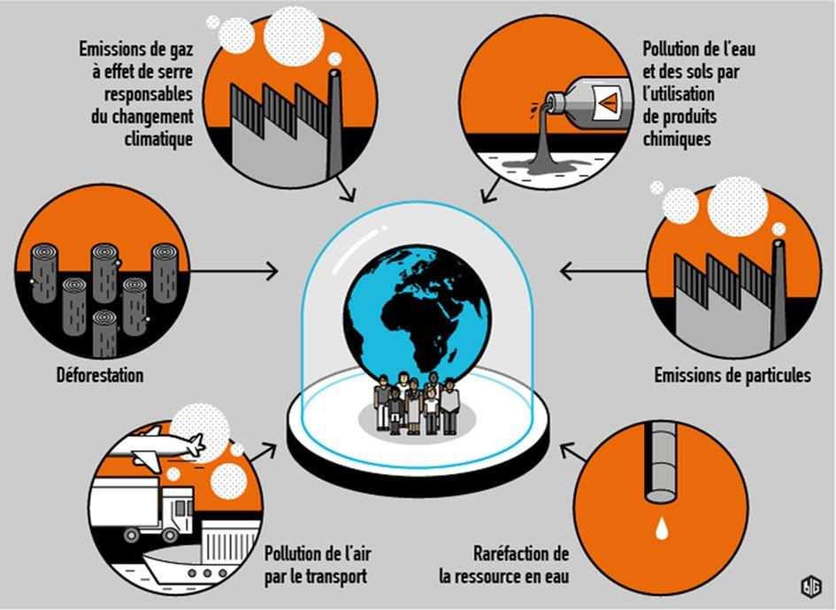

Le culte de la honte, de l’indignation et du pessimisme en Occident
par Thierry GODEFRIDI
Les supposées élites de l’Occident ont l’habitude de se montrer sélectives dans leurs condamnations et de ne pas appliquer les mêmes critères de jugement quand elles parlent de l’Occident ou du reste du monde. Victor Davis Hanson, un humaniste et historien de la Hoover Institution à l’université de Stanford en Californie, n’est certes ni le premier, ni le dernier à s’en étonner.
« Comment osez-vous ? »
Dans un article du 30 janvier 2020, il cite son collègue historien Niall Ferguson qui a fait remarquer que la célébrité mondialisée de l’activisme écologique, l’adolescente suédoise Greta Thunberg, serait mieux avisée de diriger son animosité « comment osez-vous ? » vers la Chine et l’Inde plutôt que de faire la leçon aux Européens et aux Américains qui ont réussi à réduire leurs émissions de carbone de manière spectaculaire.
Non seulement c’est en Chine et en Inde que vit plus d’un tiers de la population mondiale, mais, en outre, elles continuent de développer leurs industries à base de charbon. C’est donc en grande partie de ces deux pays-là que dépendra l’évolution du niveau mondial des émissions de gaz à effet de serre. (Voir aussi ci-dessous les projections de l’évolution de la démographie mondiale dans les prochaines décennies. – Graphique : Statista.)
Victor Davis Hanson rappelle dans son article la fascination qu’exerçaient sur les élites occidentales, y compris aux Etats-Unis, le modèle communiste de l’Union soviétique dans les années 50, puis le modèle économique contrôlé par l’Etat du Japon dans les années 80, et, enfin, le modèle social-démocrate de l’Union européenne après que les précédents se furent sclérosés.
La Chine, au centre des fantasmes
Depuis quelques années, c’est la Chine qui est au centre de tous les fantasmes. La Chine représente désormais 1/6ème du PIB mondial1 – le double par rapport à 2000 – et un tiers des investissements planétaires2. Mais, la supériorité alléguée3 de la dualité entre son régime politique autoritaire et son système économique pseudo-libéral résistera-t-elle à sa dernière crise sanitaire en cours, au désastre écologique et humain de l’extraction des terres rares4, à la corruption, à sa surveillance orwellienne de ses citoyens, à ses camps de rééducation ?
Quand ce ne sera la Chine, quelle autre alternative vaudra nécessairement mieux que l’abominable système capitaliste démocratique ? N’importe quoi, pourvu que ce ne fût pas le système capitaliste démocratique (à ne pas confondre avec le capitalisme de copinage5, lui, par contre, fort prisé par les élites politiques, financières et industrielles en Europe).
Si, pour la jeune Greta, « la crise climatique ne concerne pas seulement l’environnement », c’est aussi une « crise des droits de l’homme, de la justice et de la volonté politique et des systèmes d’oppression6 coloniaux, racistes et patriarcaux qui l’ont créée et alimentée », pourquoi n’adresse-t-elle pas une partie de ses récriminations directement aux dirigeants chinois et n’appelle-t-elle pas au boycott, aux sanctions, à une Skolstrejk för klimatet à Pékin ? (Elle pourrait s’y rendre en train.)
Droits de l’homme et de la femme
Et, si l’activisme de l’Occident a pour objectif d’instaurer les droits de l’homme à l’échelle mondiale et de réduire les discriminations à l’égard des femmes et la haine à l’égard des homosexuels, ne serait-il pas beaucoup plus efficace de se concentrer sur les plus grands délinquants, ces pays où les droits des femmes sont inexistants et l’homosexualité est un crime punissable de la peine capitale, s’interroge Victor Davis Hanson.
On entend beaucoup moins parler de résolutions du Conseil des droits de l’homme des Nations unies, l’organe intergouvernemental principal de l’ONU sur
ces questions très actuelles et très concrètes, que l’on n’entend parler des hypothèses du GIEC, le Groupe d’experts intergouvernemental sur l’évolution du climat, quand il s’agit de prédire ce dernier à 30, 100, voire 1000 ans ! Curieux ?
Quand on sait que bon nombre des 47 pays membres du Conseil des droits de l’homme des Nations unies commettent fréquemment des violations desdits droits et qu’en ce qui concerne le climat, c’est l’Occident qui s’autoflagelle, tout s’explique – en quelque sorte.

Honte, indignation, pessimisme
Quelles sont les raisons du culte de la honte, de l’indignation et du pessimisme en Occident ? Victor Davis Hanson, l’humaniste et historien de l’université de Stanford, évoque la lâcheté et un sentiment de sempiternelle culpabilité, en particulier en Europe, en raison de son passé colonial que l’on ne manque jamais – comme le fit la jeune Greta – de lui rappeler à n’importe quel propos.
Faut-il pour autant que l’Occident continue à commercer avec des nations autocratiques, sexistes et homophobes et ferme les yeux quand ses intérêts sont en jeu ? Que chacun en juge, en âme et conscience.
Partager cette page